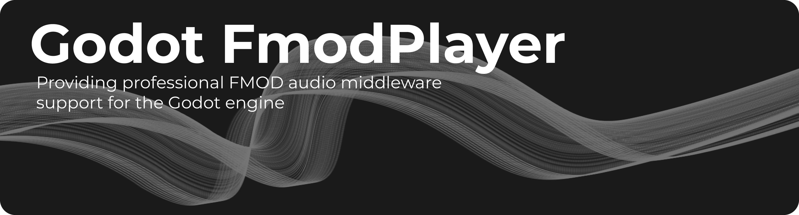

Godot-FmodPlayer 文档
{kind=link}

Godot-FmodPlayer 插件
Godot-FmodPlayer 是一个 Godot 4 GDExtension 插件，通过 FMOD Core API 提供高级音频播放功能。
功能特性
- 🎵 多格式音频支持
支持 MP3、WAV、OGG、FLAC、MOD 等主流音频格式
- 📂 灵活加载模式
文件系统、内存缓冲区、Godot PCK、流式加载
- 🎛️ 专业 DSP 效果器
内置 16+ 种音频效果：混响、EQ、滤波器、延迟、失真等
- 🎚️ 动态混音系统
音频总线、通道组、实时参数调整
- 📊 性能监控
集成 Godot Performance Monitor，实时监控 CPU 和内存使用
- 🛠️ 编辑器集成
音频资源导入器、Inspector 属性编辑、自定义图标
备注
本插件使用 FMOD Core API （底层 API），而非 FMOD Studio API。 如需 Studio API 支持，请使用 fmod-gdextension 。
重要
FMOD 是 Firelight Technologies Pty Ltd 的专有音频引擎。 商业使用需要从 fmod.com 获取 FMOD 许可证。
快速导航
用户指南
API 参考
其他
快速开始
基本流式播放:
extends Node
@onready var player = $FmodAudioStreamPlayer
func _ready():
var stream = FmodAudioStream.new()
stream.file_path = "res://music/background.mp3"
player.stream = stream
player.volume_db = -6.0
player.play()
采样播放（一次性音效）:
func play_explosion():
var emitter = $FmodAudioSampleEmitter
var sample = FmodAudioSample.new()
sample.file_path = "res://sfx/explosion.wav"
emitter.sample = sample
emitter.bus = "SFX"
emitter.play()
添加混响效果:
func add_reverb():
var system = FmodServer.main_system
var reverb = system.create_dsp_by_type(FmodDSP.DSP_TYPE_SFXREVERB)
reverb.set_parameter_float(0, 0.5) # Decay time
reverb.set_parameter_float(1, 0.3) # Early delay
var master_bus = system.get_master_channel_group()
master_bus.add_dsp(0, reverb)
平台支持
平台 |
架构 |
状态 |
|---|---|---|
Windows |
x64 |
✅ 支持 |
Android |
arm64, arm32, x86, x86_64 |
✅ 支持 |